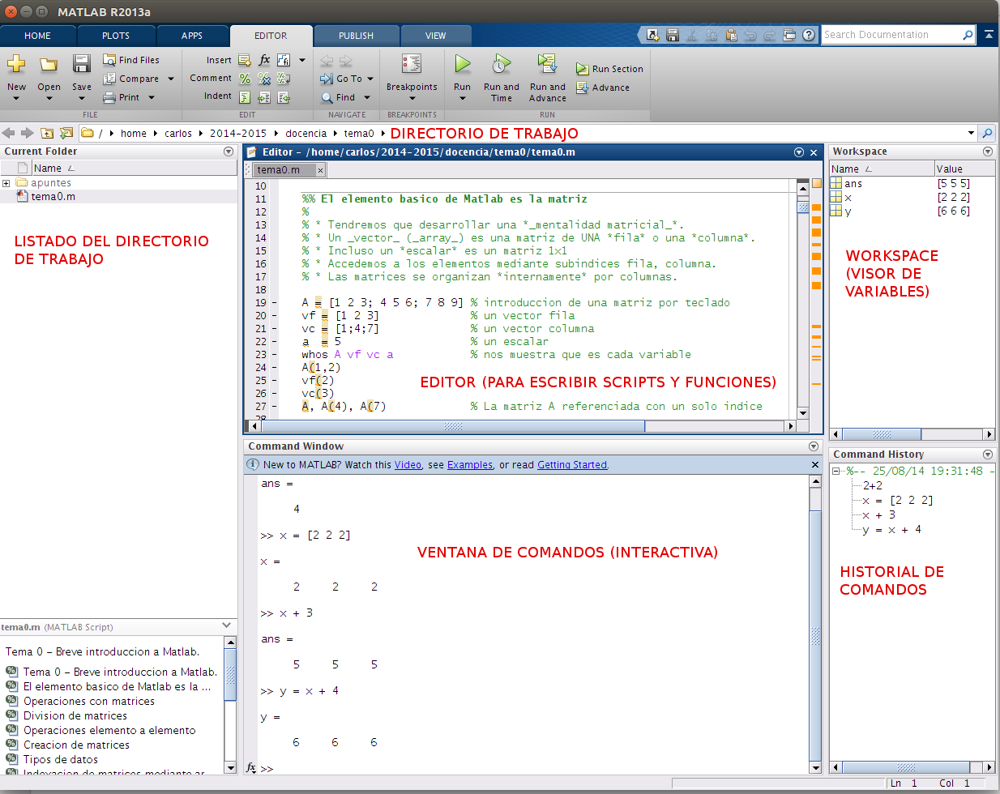
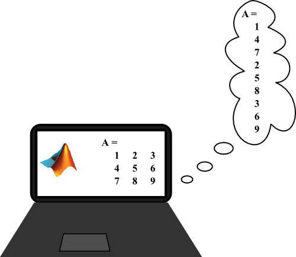
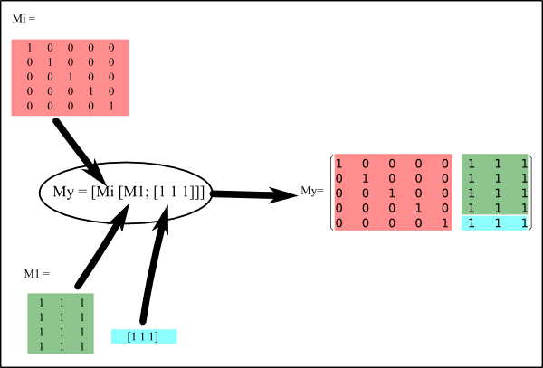
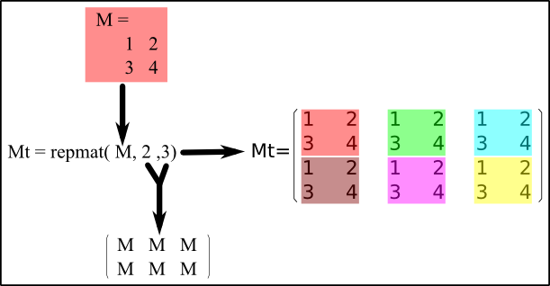
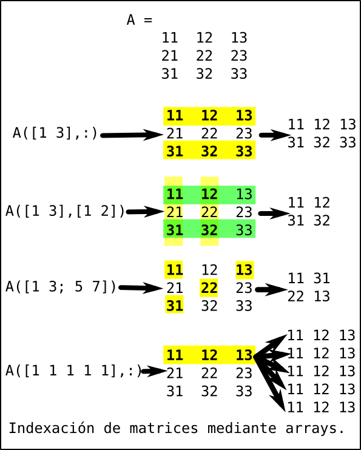
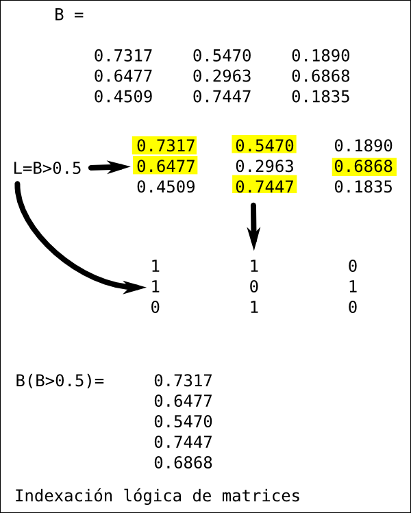
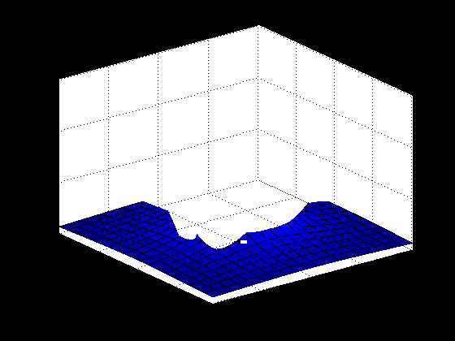
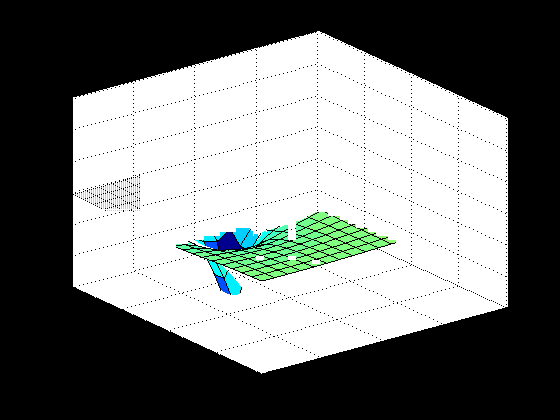
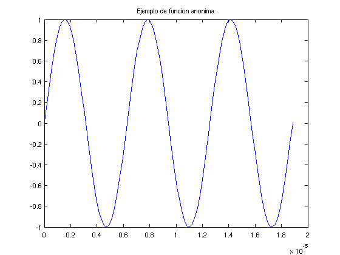

Tema 0 - Breve introduccion a Matlab.
METODOS NUMERICOS Y DE SIMULACION - Curso 2015-2016. Segundo curso del Grado en Fisica. Universidad de Sevilla.
Contents
- El entorno Matlab
- El elemento basico de Matlab es la matriz
- Operaciones con matrices
- Division de matrices
- Operaciones elemento a elemento
- Creacion de matrices
- Tipos de datos
- Indexacion de matrices mediante arrays enteros y logicos
- Cuestion 1
- Otros tipos de datos
- Cadenas de caracteres
- Estructuras
- Matrices de celdas (cell arrays)
- Control de flujo
- Scripts y funciones
- Funciones anonimas
- Obtener ayuda en Matlab
- Recomendaciones de programacion

El entorno Matlab
La siguiente figura muestra los elementos mas habituales del entorno Matlab
- Directorio de trabajo
- Ventata de comandos interactiva (command window).
- Editor (escribir texto)
- Workspace (visor de variables)
- Historial de comandos (command history)
- El entorno Matlab contiene todo lo necesario para trabajar con archivos (listar, comprimir en zip, etc). No suele ser necesario salir al sistema operativo (windows, etc).

El elemento basico de Matlab es la matriz
- Un vector (array) es una matriz de UNA fila o una columna.
- Incluso un escalar es un matriz 1x1
- Accedemos a los elementos mediante subindices fila, columna.
- Las matrices se organizan internamente por columnas.

A = [1 2 3; 4 5 6; 7 8 9] % introduccion de una matriz por teclado vf = [1 2 3] % un vector fila vc = [1;4;7] % un vector columna a = 5 % un escalar whos A vf vc a % nos muestra que es cada variable A(1,2) vf(2) vc(3) A, A(4), A(7) % La matriz A referenciada con un solo indice B = [] % matriz vacia whos B
A =
1 2 3
4 5 6
7 8 9
vf =
1 2 3
vc =
1
4
7
a =
5
Name Size Bytes Class Attributes
A 3x3 72 double
a 1x1 8 double
vc 3x1 24 double
vf 1x3 24 double
ans =
2
ans =
2
ans =
7
A =
1 2 3
4 5 6
7 8 9
ans =
2
ans =
3
B =
[]
Name Size Bytes Class Attributes
B 0x0 0 double
Operaciones con matrices
- Suma, resta, multiplicacion, traspuesta y multiplicacion por un escalar y potenciacion a un escalar coinciden con sus definiciones habituales en matematicas.
At = A' % traspuesta B = At*10 % multiplicacion por un escalar A + B % suma de matrices A - B % resta de matrices A*B % producto de matrices B*A % no conmutativo, en general A*A, A^2 % potenciacion %vf + vc % suma de matrices de distinta dimension (!ERROR!) vf + vc' % vf*vc % matriz 1x3 por matriz 3x1: matriz 1x1 vc*vf % matriz 3x1 por matriz 1x3: matriz 3x3
At =
1 4 7
2 5 8
3 6 9
B =
10 40 70
20 50 80
30 60 90
ans =
11 42 73
24 55 86
37 68 99
ans =
-9 -38 -67
-16 -45 -74
-23 -52 -81
ans =
140 320 500
320 770 1220
500 1220 1940
ans =
660 780 900
780 930 1080
900 1080 1260
ans =
30 36 42
66 81 96
102 126 150
ans =
30 36 42
66 81 96
102 126 150
ans =
2 6 10
ans =
30
ans =
1 2 3
4 8 12
7 14 21
Division de matrices
- Las divisiones de matrices equivalen a multiplicar por la inversa.
- Division izquierda \
- Division derecha /
C = [2 -2 1; -1 1 1; -1 3 5] Ci = inv(C) % inversa de A Ci*C % multiplicacion por la inversa C*Ci % Ci*B % C\B % division IZQUIERDA B*Ci % B/C % division DERECHA % sea el sistema de ecuaciones C*x = vc x = C\vc % resolucion de sistemas de ecuaciones lineales C*x vc
C =
2 -2 1
-1 1 1
-1 3 5
Ci =
-0.3333 -2.1667 0.5000
-0.6667 -1.8333 0.5000
0.3333 0.6667 0
ans =
1 0 0
0 1 0
0 0 1
ans =
1.0000 0.0000 0
-0.0000 1.0000 0
-0.0000 -0.0000 1.0000
ans =
-31.6667 -91.6667 -151.6667
-28.3333 -88.3333 -148.3333
16.6667 46.6667 76.6667
ans =
-31.6667 -91.6667 -151.6667
-28.3333 -88.3333 -148.3333
16.6667 46.6667 76.6667
ans =
-6.6667 -48.3333 25.0000
-13.3333 -81.6667 35.0000
-20.0000 -115.0000 45.0000
ans =
-6.6667 -48.3333 25.0000
-13.3333 -81.6667 35.0000
-20.0000 -115.0000 45.0000
x =
-5.5000
-4.5000
3.0000
ans =
1
4
7
vc =
1
4
7
Operaciones elemento a elemento
- Es posible multiplicar y dividir las matrices elemento a elemento.
- En tal caso se utilizan como simples tablas de numeros.
- Las operaciones elemento a elemento son .*, ./, .\, .^.
- Logicamente, requieren las misma dimensiones en ambas matrices.
A, B, A.*B % multiplicacion elemento a elemento A, B, A./B % division de cada elemento de A entre c.e. de B A, B, A.\B % division de cada elemento de B entre c.e. de A vc.^(vf') % potenciacion (observese el parentesis)
A =
1 2 3
4 5 6
7 8 9
B =
10 40 70
20 50 80
30 60 90
ans =
10 80 210
80 250 480
210 480 810
A =
1 2 3
4 5 6
7 8 9
B =
10 40 70
20 50 80
30 60 90
ans =
0.1000 0.0500 0.0429
0.2000 0.1000 0.0750
0.2333 0.1333 0.1000
A =
1 2 3
4 5 6
7 8 9
B =
10 40 70
20 50 80
30 60 90
ans =
10.0000 20.0000 23.3333
5.0000 10.0000 13.3333
4.2857 7.5000 10.0000
ans =
1
16
343
Creacion de matrices
- La creacion de matrices por teclado solo es valida para dimensiones reducidas.
- Matrices mayores se crean normalmente mediante funciones de Matlab.
- Tambien pueden crearse a partir de la yuxtaposion de otras.
M0 = zeros(3,4) % matriz de ceros M1 = ones(4,3) % matriz de unos Mi = eye(5) % matriz unidad 5x5 Mr = rand(3,4) % matriz 3x4 con elementos aleatorios entre 0 y 1 My = [Mi [M1; [1 1 1]]] % matriz construida con trozos de otras Mt = repmat( [1 2; 3 4], 2 ,3) % matriz de matrices v1 = 1:0.1:2 % *operador dos puntos* v2 = 1:10 v3 = 10:-1:1 v4(7) = 3 % se crean los elementos necesarios para que tenga sentido v5 = linspace( 0, 3, 7) % la funcion linspce genera valores equiespaciados
M0 =
0 0 0 0
0 0 0 0
0 0 0 0
M1 =
1 1 1
1 1 1
1 1 1
1 1 1
Mi =
1 0 0 0 0
0 1 0 0 0
0 0 1 0 0
0 0 0 1 0
0 0 0 0 1
Mr =
0.1789 0.0713 0.9970 0.8613
0.7466 0.4891 0.0044 0.9091
0.0495 0.8499 0.5426 0.8454
My =
1 0 0 0 0 1 1 1
0 1 0 0 0 1 1 1
0 0 1 0 0 1 1 1
0 0 0 1 0 1 1 1
0 0 0 0 1 1 1 1
Mt =
1 2 1 2 1 2
3 4 3 4 3 4
1 2 1 2 1 2
3 4 3 4 3 4
v1 =
Columns 1 through 7
1.0000 1.1000 1.2000 1.3000 1.4000 1.5000 1.6000
Columns 8 through 11
1.7000 1.8000 1.9000 2.0000
v2 =
1 2 3 4 5 6 7 8 9 10
v3 =
10 9 8 7 6 5 4 3 2 1
v4 =
0 0 0 0 0 0 3
v5 =
0 0.5000 1.0000 1.5000 2.0000 2.5000 3.0000


Tipos de datos
- Los elementos de la matrices son por defecto doubles (numeros de coma flotante de doble precision).
- Existen valores especiales NaN (not a number), Inf (infinity), -Inf.
- Tambien existen los enteros (integer), flotantes de precision simple (float) y los booleanos (logical, con valores true o false representados por 1 y 0 respectivamente).
- Existen las versiones complejas de los float, doubles y enteros.
a = 3 whos a % por defecto, las matrices contienen doubles ai = int32(a) % se puede forzar a que sean enteros whos ai l1 = true, l2 = logical(1) % variable logica whos l1 l2 M = rand(3) lM = M > 0.5 % de operaciones logicas se obtienen matrices logicas 1/0, -1/0, 0/0 % Inf, -Inf y NaN 1/Inf, 1/NaN 1+3i, 1i, 1i^2 % numeros complejos y unidad imaginaria a = true % variable logica con valor verdadero: la representa por 1 b = false % variable logica con valor falso: la representa por 0
a =
3
Name Size Bytes Class Attributes
a 1x1 8 double
ai =
3
Name Size Bytes Class Attributes
ai 1x1 4 int32
l1 =
1
l2 =
1
Name Size Bytes Class Attributes
l1 1x1 1 logical
l2 1x1 1 logical
M =
0.8789 0.5090 0.9280
0.7462 0.1688 0.1695
0.1175 0.8311 0.8837
lM =
1 1 1
1 0 0
0 1 1
ans =
Inf
ans =
-Inf
ans =
NaN
ans =
0
ans =
NaN
ans =
1.0000 + 3.0000i
ans =
0.0000 + 1.0000i
ans =
-1
a =
1
b =
0
Indexacion de matrices mediante arrays enteros y logicos
- Se pueden seleccionar elementos de las matrices usando como indices otras matrices logicas o enteras.
- La indexacion con matrices enteras produce una matriz con los elementos correspondientes a tales valores de los indices.
- La indexacion con matrices logicas devuelve los elementos en los que el indice toma el valor true (1).
- Estos tipos de indexacion, aunque muy concisos y elegantes, pueden dar lugar a codigos muy confusos por lo que hay que usarlos con precaucion.


A = [11 12 13; 21 22 23; 31 32 33] A( [1 3],:) % filas 1 y 3. Todas las columnas (operador :) A( [1 3], [1 2]) % columnas 1 y 2 de las filas 1 y 3 A( [1 3; 5 7]) % elementos 1, 3, 1, 2 de A (en representacion interna) % igual a [ A(1) A(3); A(5) A(7)] A( [1 1 1 1 1],:) % la fila 1 cinco veces A(:) % todos los elementos de A en una columna A(3:end) % los elementos de A desde el tercero al ultimo %B = rand(3) % matriz 3x3 con elementos aleatorios B = [ 0.7317 0.5470 0.1890 0.6477 0.2963 0.6868 0.4509 0.7447 0.1835 ] L = B > 0.5 % matriz logica con valor true donde el elemento de B > 0.5 B(L) % conjunto de elementos mayores que 0.5 (en columna) C = zeros( size( B)) % matriz de ceros con las mismas dimensiones que C C(L) = B(L)-1 % a los elementos mayores que 0.5 les restamos de 1 disp('Version con matrices logicas') C % version con bucles [n, m] = size( C); for i = 1:n for j = 1:m if B(i,j) > 0.5 C(i,j) = B(i,j) - 1; else C(i,j) = B(i,j); end end end disp('Version con bucles') C
A =
11 12 13
21 22 23
31 32 33
ans =
11 12 13
31 32 33
ans =
11 12
31 32
ans =
11 31
22 13
ans =
11 12 13
11 12 13
11 12 13
11 12 13
11 12 13
ans =
11
21
31
12
22
32
13
23
33
ans =
31 12 22 32 13 23 33
B =
0.7317 0.5470 0.1890
0.6477 0.2963 0.6868
0.4509 0.7447 0.1835
L =
1 1 0
1 0 1
0 1 0
ans =
0.7317
0.6477
0.5470
0.7447
0.6868
C =
0 0 0
0 0 0
0 0 0
C =
-0.2683 -0.4530 0
-0.3523 0 -0.3132
0 -0.2553 0
Version con matrices logicas
C =
-0.2683 -0.4530 0
-0.3523 0 -0.3132
0 -0.2553 0
Version con bucles
C =
-0.2683 -0.4530 0.1890
-0.3523 0.2963 -0.3132
0.4509 -0.2553 0.1835
Cuestion 1
Un grupo de 20 estudiantes (numerados del 1 al 20) ha realizado dos examenes parciales con las calificaciones recogidas en la tabla de mas abajo. La nota global se obtiene mediante la media aritmetica aumentada con las siguientes normas:
- Se exige al menos un cuatro en ambos parciales para aprobar, obteniendo un 4 como nota media si no se cumple esta condicion
- Si tiene mas de un 6 en ambos parciales se le regala un punto extra sobre la media aritmetica.
- A los alumnos 3, 12 y 19 se les quita un punto de la nota final porque se copiaron un problema.
- No se admiten notas superiores a 10.
N p1 p2 1 2.2 1.1 2 1.1 0.6 3 4.0 4.5 4 3.7 7.6 5 6.3 7.7 6 9.3 9.7 7 1.9 1.4 8 7.0 0.9 9 5.3 5.3 10 8.6 4.8 11 3.9 6.7 12 7.4 5.2 13 3.5 1.5 14 5.9 2.6 15 0.4 7.5 16 2.4 4.4 17 6.9 3.6 18 7.4 3.9 19 6.8 7.0 20 4.4 0.2
Otros tipos de datos
- Cadenas de caracteres.
- Estructuras (struct).
- Matrices de celda (Cell arrays).
Cadenas de caracteres
Son matrices de caracteres.
c1 = 'fulano' % creacion de una cadena c2 = ['fulano', 'mengano'] % concatenacion %c3 = ['fulano'; 'mengano'] % erroneo: distintos numeros de elementos c3 = char('fulano','mengano') % la funcion char arregla el problema whos c1 c2 c3
c1 = fulano c2 = fulanomengano c3 = fulano mengano Name Size Bytes Class Attributes c1 1x6 12 char c2 1x13 26 char c3 2x7 28 char
Estructuras
Son agrupaciones de datos bajo un mismo nombre. Hagamos como ejemplo una estructura para los elementos de la tabla periodica.
clear elem; elem.simbolo = 'H'; % especificamos los campos mediante el operador . elem.mp = 1.00794; elem, whos elem elem(2).simbolo = 'He'; % podemos añadir mas elementos elem(2).mp = 4.002602; elem, whos elem elem.simbolo
elem =
simbolo: 'H'
mp: 1.0079
Name Size Bytes Class Attributes
elem 1x1 362 struct
elem =
1x2 struct array with fields:
simbolo
mp
Name Size Bytes Class Attributes
elem 1x2 598 struct
ans =
H
ans =
He
Matrices de celdas (cell arrays)
Son matrices de elementos de distintos tipos. Sus elementos se denotan con llaves.
mc{1} = 'fulano';
mc{2} = [1 2 3];
mc{3} = rand(3);
mc, whos mc
% tambien se pueden crear de forma analoga a los vectores y matrices
mc2 = { 'fulano', [1 2 3], rand(3)};
mc2, whos mc2
% reservar memoria para celdas: funcion cell
mc3 = cell( 1,3);
% ahora podemos rellenar elemento a elemento
mc3{1} = 'fulano';
mc3{2} = [1 2 3];
mc3{3} = rand(3);
mc =
'fulano' [1x3 double] [3x3 double]
Name Size Bytes Class Attributes
mc 1x3 444 cell
mc2 =
'fulano' [1x3 double] [3x3 double]
Name Size Bytes Class Attributes
mc2 1x3 444 cell
Control de flujo
El flujo del programa es el orden en el cual se ejecutan las instrucciones. El flujo se controla mediante bifurcacions (if) y bucles (for, while combinado con break y continue). En Matlab, no suele ser necesario utilizar bucles para realizar operaciones elemento a elemento sobre las matrices. Revisamos el bucle for.
for i = 1:5 i end % bucle sobre una matriz A = [ 11 12 13; 21 22 23; 31 32 33]; [m,n] = size( A); for i = 1:m for j = 1:n fprintf('El elemento fila %d columna %d vale %3.1f\n', i,j, A(i,j)); end end % % Consultar 'Aprenda Matlab ...' (capitulo 6) para repasar el resto de % bifurcaciones y bucles.
i =
1
i =
2
i =
3
i =
4
i =
5
El elemento fila 1 columna 1 vale 11.0
El elemento fila 1 columna 2 vale 12.0
El elemento fila 1 columna 3 vale 13.0
El elemento fila 2 columna 1 vale 21.0
El elemento fila 2 columna 2 vale 22.0
El elemento fila 2 columna 3 vale 23.0
El elemento fila 3 columna 1 vale 31.0
El elemento fila 3 columna 2 vale 32.0
El elemento fila 3 columna 3 vale 33.0
Scripts y funciones
Las ordenes de Matlab se organizan en
- Sesion interactiva, tecleando directamente sobre la ventana de comandos.
- Archivos con conjuntos de comandos (archivos de script), equivalentes a escribir los comandos en sesion interactiva. Las variables de un script son accesibles desde el espacio Matlab.
- Funciones, con argumentos de entrada y de salida y con variables internas a la funcion. Las variables de una funcion no son accesibles desde el espacio Matlab (exceptuando los argumentos de salida).
- Cada funcion debe estar contenida en su propio fichero .m.
- Los argumentos de entrada NO SE MODIFICAN en la funcion.
- Aprovechamos para mostrar una importante herramienta denominada debugger.
edit elecpot.m % vemos la fuente del script en el editor elecpot % ejecutamos el script edit felecpot.m % vemos la fuente de la funcion en el editor figure('Name','Script'); surf( RX, RY, felecpot( q, rp, RX, RY)); xlabel('x(m)'); ylabel('y(m)'); zlabel('Potencial(V)') title('Potencial electrostatico de una carga puntual'); figure('Name','Funcion'); surf( RX, RY, felecpot( q, rp+[ 0.5,0], RX, RY) + ... felecpot( -q, rp+[-0.5,0], RX, RY) ); xlabel('x(m)'); ylabel('y(m)'); zlabel('Potencial(V)') title('Potencial electrostatico de dos cargas puntuales'); 
Funciones anonimas
Son funciones definidas en una linea. Por ejemplo
f = @(A,w,V0,t) A*sin(w*t) + V0; % funcion anonima A = 1.0; w = 1e6; V0 = 0; g = @(t) f( A, w, V0, t); t = linspace( 0, 2*pi/w*3); figure('Name','Ejemplo de funcion anonima'); plot( t, g(t)); title( get( gcf, 'Name' ));
Obtener ayuda en Matlab
- Tecleando help nombrefuncion se obtiene ayuda sobre la funcion. El texto de esta ayuda esta escrito al principio del fichero de la funcion.
- Tecleando doc nombrefuncion se abre la documencation de Matlab por la pagina referente a la funcion.
- Si mientras se escribe se pulsa la tecla tabulador, Matlab nos muestra una lista de las funciones cuyo nombre comienza con las letras ya escritas.
- La tecla de flecha hacia arriba re-escribe los comandos tecleados anteriormente (los contenidos en el historial).
help meshgrid edit meshgrid doc meshgrid
MESHGRID Cartesian grid in 2-D/3-D space
[X,Y] = MESHGRID(xgv,ygv) replicates the grid vectors xgv and ygv to
produce the coordinates of a rectangular grid (X, Y). The grid vector
xgv is replicated numel(ygv) times to form the columns of X. The grid
vector ygv is replicated numel(xgv) times to form the rows of Y.
[X,Y,Z] = MESHGRID(xgv,ygv,zgv) replicates the grid vectors xgv, ygv, zgv
to produce the coordinates of a 3D rectangular grid (X, Y, Z). The grid
vectors xgv,ygv,zgv form the columns of X, rows of Y, and pages of Z
respectively. (X,Y,Z) are of size numel(ygv)-by-numel(xgv)-by(numel(zgv).
[X,Y] = MESHGRID(gv) is equivalent to [X,Y] = MESHGRID(gv,gv).
[X,Y,Z] = MESHGRID(gv) is equivalent to [X,Y,Z] = MESHGRID(gv,gv,gv).
The coordinate arrays are typically used for the evaluation of functions
of two or three variables and for surface and volumetric plots.
MESHGRID and NDGRID are similar, though MESHGRID is restricted to 2-D
and 3-D while NDGRID supports 1-D to N-D. In 2-D and 3-D the coordinates
output by each function are the same, the difference is the shape of the
output arrays. For grid vectors xgv, ygv and zgv of length M, N and P
respectively, NDGRID(xgv, ygv) will output arrays of size M-by-N while
MESHGRID(xgv, ygv) outputs arrays of size N-by-M. Similarly,
NDGRID(xgv, ygv, zgv) will output arrays of size M-by-N-by-P while
MESHGRID(xgv, ygv, zgv) outputs arrays of size N-by-M-by-P.
Example: Evaluate the function x*exp(-x^2-y^2)
over the range -2 < x < 2, -4 < y < 4,
[X,Y] = meshgrid(-2:.2:2, -4:.4:4);
Z = X .* exp(-X.^2 - Y.^2);
surf(X,Y,Z)
Class support for inputs xgv,ygv,zgv:
float: double, single
See also SURF, SLICE, NDGRID.
Overloaded methods:
codistributed/meshgrid
gpuArray/meshgrid
Reference page in Help browser
doc meshgrid
Recomendaciones de programacion
- Todo codigo debe partir de un claro planteamiento previo: no esperemos encontrar el planteamiento sobre la marcha.
- La prioridad a la hora de programar es que el codigo sea claro y lo mas sencillo posible.
- Deben utilizarse operaciones matriciales en lugar de bucles siempre que sea posible (y no compliquen el codigo).
- Si el codigo se va a utilizar una o dos veces conviene un archivo de script mas que una funcion.
- Una funcion debe ser logica y clara mas alla del codigo en que se inserta y debe aspirar a ser mas general. No tiene sentido hacer funciones con trozos arbitrarios de codigo.
- Siempre que sea posible debe utilizarse una funcion de biblioteca en lugar de programarla nosotros/as mismos/as.